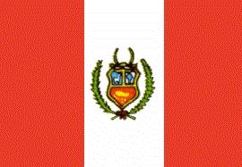

Perú
|  |  |
Información general
Nombre oficial: República del Perú
Área: 1 285 216 km²
Costas: 2 997 km
División política:12 regiones y 24 departamentos, más la provincia
Departamentos Capital
- Amazonas Chachapoyas
- Ancash Huaraz
- Apurímac Abancay
- Arequipa Arequipa
- Ayacucho Ayacucho
- Cajamarca Cajamarca
- Cuzco Cuzco
- Huancavelica Huancavelica
- Huánuco Huánuco
- Ica Ica
- Junín Huancayo
- La Libertad Trujillo
- Lambayeque Chiclayo
- Lima Lima
- Loreto Iquitos
- Madre de Dios Puerto Maldonado
- Moquegua Moquegua
- Pasco Cerro de Pasco
- Piura Piura
- Puno Puno
- San Martín Moyobamba
- Tacna Tacna
- Tumbes Tumbes
- Ucayali Pucallpa
Unidad monetaria: Nuevo Sol
1 Nuevo Sol = 100 céntimos
Idiomas: Español, quechua y aimará (oficiales); jíbaro y cien lenguas menores; algunas comunidades de origen extranjero hablan también japonés, chino e inglés (no oficiales)
Fiesta nacional: 28 de julio, Día de la Independencia
Gentilicio: Peruano
Hora oficial: GMT -5 horas (normal), -4 (verano)
Miembro de: ONU, OEA, ALADI, Pacto Andino
Curiosidades
En la árida pampa de Nazca, a unos 460 Km al sur de Lima, se encuentra uno de los misterios más asombrosos de la humanidad. Las llamadas líneas de Nazca, un conjunto de perfectos dibujos de dimensiones gigantescas, únicos en el mundo. Entre los dibujos se percibe claramente un ave de 285m de largo y una araña de 46 m. Los estudios realizados presumen que se trata de un calendario producto de la cultura Nazca que habitó en esa región alrededor del año 100 EC.
Machu Picchu es una antigua ciudad inca situada cerca de Cuzco, en los Andes del Perú. Construida en la cima de Huayna Oichu, a 3100 m de altura se le rodeó de una muralla que protegía los grupos de viviendas de piedras, escalonadas y separadas por pasadizos. Los templos no están decorados exteriormente.
En territorio del Perú nace el río Amazonas, el más caudaloso del mundo y uno de los de mayor longitud (6 480km), en la confluencia del Marañón con el Ucayali.
Información adicional en Internet.
Perfil Ecónomico
Perfil Demográfico
Población: 27.219.264 hab.
Densidad de población: 20,5 hab/km²
Fuente INEI http://www.inei.gob.pe/
Perfil Cultural
Alfabetismo: 90 %
Religión:
- Católicos: 88,9%
- Protestantes (evangélicos): 7,2%
- No religiosos: 1,4%
- Otros: 2,5% (1993)
Algunas figuras notables:
- Inca Garcilaso de la Vega (1539-1616). Historiador y escritor
- Carlos Monge (1884). Médico
- Ricardo Palma (1833-1919). Historiador, dramaturgo y periodista
- José Santos Chocano (1875-1934). Poeta
- Fernando Szyszlo (1925). Pintor
- Julio C. Tello (1880-1947). Arqueólogo
- José Hipólito Unanue Pavón (1755-1833). Médico
- César Vallejo (1892-1938). Poeta, novelista y periodista
- Mario Vargas Llosa (1936). Novelista
Lugares declarados patrimonio mundial por la UNESCO
- Parque Nacional Río Abiseo.
- Machu Pichu (santuario histórico).
- Parque Nacional de Manu.
- Cuzco.
- Chan chan (sitio arqueológico).
Sistema de Gobierno
Constitución vigente: 29 de diciembre de 1993 (Última reforma 2005)
Sistema ejecutivo: Presidente (jefe de Estado y Gobierno, electo por sufragio universal para un término de cinco años).
Sistema legislativo: Congreso unicameral (120 miembros elegidos por "distrito nacional único" para un término de cinco años).
Sistema judicial: Corte Suprema (dieciocho vocales supremos), cortes superiores (284 vocales superiores), juzgados de primera instancia (especializados en lo civil, penal, laboral, agrario, del niño y del adolescente), juzgado de Paz Letrados. El Tribunal de Garantías Constitucionales y el Ministerio Público son independientes del poder judicial.
Gobierno subdivisional: Los departamentos se dividen en 194 provincias (más la provincia constitucional de El Callao) y 1 812 distritos.
Aproximación histórica
Situada en los Andes meridionales, Perú limita con Ecuador y Colombia, por el norte, con Brasil y Bolivia, por el este, con Chile por el sur y con el Océano Pacífico por el oeste.
En Perú se perfilan tres regiones naturales: la costa, la sierra y la montaña. La costa es una faja de un ancho entre los 60 y los 170Km, arenosa y árida, con excepción de algunas terrazas fluviales y marinas, así como valles fértiles. La sierra está constituida por los Andes, que al atravesar el país forman tres ramales (cordilleras Occidental, Central y Oriental). Los Andes determinan tres importantes cuencas hidrográficas: la del Pacífico, con cincuenta y tres ríos; la del Amazonas y la del Titicaca. Comparte con Bolivia, el más alto de los grandes lagos del mundo; el Titicaca, con una profundidad máxima de 304 metros y una extensión de algo más de 8 000 kilómetros cuadrados.
Francisco Pizarro llegó al Perú en 1530, con 180 hombres y descubrió la civilización de más desarrollo y organización de la América Antigua, el Imperio Inca. El origen de los primeros incas se confunde con el mito, destacándose las figuras legendarias como Manco Capac. El Imperio Inca conquistó y absorbió los pueblos preincaicos, los actuales territorios de Perú y Bolivia cayeron bajo su poder, hacia el sur llegaron hasta el centro de Chile y hasta Tucumán en la Argentina y por el norte hasta el actual Ecuador. Los incas llegaron a organizar este inmenso imperio. El último emperador inca, Atahualpa vio derrumbarse su imperio ante el invasor español y murió a manos de estos en 1533.
En 1544 fue creado el Virreinato del Perú. La república se proclamó en 1822 y los triunfos en Junín y Ayacucho en 1824 acabaron definitivamente con los últimos intentos de reconquista española.
La industria pesquera ha alcanzado en Perú un desarrollo notable. El país posee un potencial minero muy grande y es productor de hidrocarburos.
Su capital Lima tiene más de 6 millones de habitantes.
«-- ir al comienzo
«-- regresar